A photo-first food-discovery concept: every photo is an actionable "eat this tonight" candidate — no star ratings, no review essays. Three prototype versions, thirty designed states, a safety-critical dietary model, and a testing plan that is written but deliberately not yet claimed as run.
TOOLS[ADD: tooling — incl. how the 3 HTML prototypes were built]
What it isUrban diners 22–35 decide what to eat from photos, but photo apps can't get you fed and rating apps don't start from appetite. Morsel is the bridge: a location-aware dish feed where every photo carries a path to action.
The arcv1 concept → v2 critique-driven fixes (the dietary-safety redesign is the headline) → v3 making the logic true: real ranking, honest location, 30 designed states, accessibility pass.
StatusConcept · v3 No usability research has been run; the 5-session plan is ready and unexecuted. All dish data and percentages are illustrative seed data.
HOW TO READ THIS PAGE — artifacts carry disclosure labels: DOCUMENTED exists and is checkable · CRITIQUE ROUND a real audit of a prior version · PROPOSED a plan or goal, never a result. All dish names, percentages, and diner counts in the screens are illustrative seed data; no usability sessions have been run.
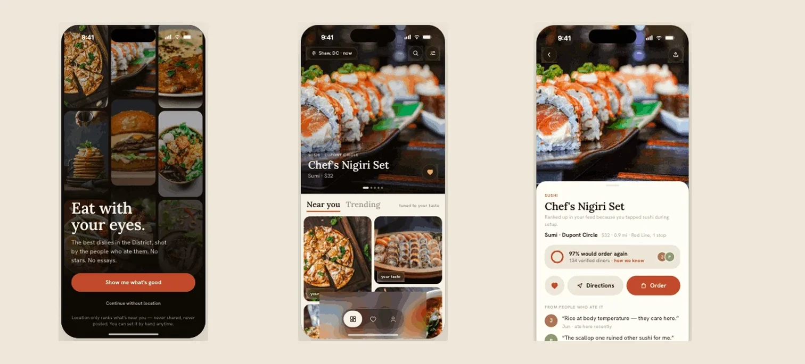
THE SHAPE OF THE PROJECTHONEST NUMBERS ONLY
3
PROTOTYPE VERSIONS, EACH PRESERVED
30
DESIGNED STATES IN V3
0
USABILITY SESSIONS RUN — PLAN READY, NOT DONE
PROBLEM & HYPOTHESIS
The tools built for restaurant discovery (Yelp, Google Maps) are organized around star ratings and review text. The tools with great food photos (TikTok, Pinterest) aren't organized around eating tonight — no price, no distance, no path to action. The hypothesis: a photo-first, location-aware dish feed closes the gap between appetite and action better than list-based rating apps. That's a testable claim, and it hasn't been tested yet — this page is explicit about which parts are designed and which parts are still hypotheses.
JOBS TO BE DONE
"It's 6:40pm and I'm hungry" — show me things nearby that look good right now; let me act in two taps
"Fill my someday list" — bank dishes that stop my scroll, retrievable when I'm actually near them
"Don't make me do ratings math" — one honest signal instead of 4.2 stars from 900 strangers
"Respect how I eat" — lifestyle shapes the feed; allergies are a hard rule, not a preference
PRINCIPLES
Six stances that shaped every screen — each one a deliberate position with a named trade-off, not a default:
No star ratings, anywhere.
Quality = "N% would order again" (repeat-order rate: revealed preference) plus short diner quotes — instead of stated-preference stars. Trade-off: an unfamiliar metric has to earn comprehension (see the trust section).
Photos dominate; chrome floats.
No text under grid photos. Trade-off: zero info scent risk — explored head-on in Exploration A.
Taste re-ranks, never filters.
Personalization must never hide the menu.
Allergies are a different tier from taste.
Excluded from discovery, retained-with-warnings where the user already acted, warned on direct opens. Never silently deleted; never promised more than delivered.
Morsel never runs its own checkout.
Order = handoff to carriers or pickup. Own the decision, not the transaction. Trade-off: the product's peak moment exits the app.
Honesty over coverage theater.
Unmapped city → say so. Not enough trust data → show nothing rather than guess. Handoff fails → visible failure plus fallback.
V1 — THE CONCEPT
v1 established the system in four core screens — hybrid feed (editorial hero + masonry grid), the repeat-order ring, instant save with opt-in collections, carrier handoff — built as a clickable prototype in three visual directions. Toast (cream + serif) won over Saffron and Charred.
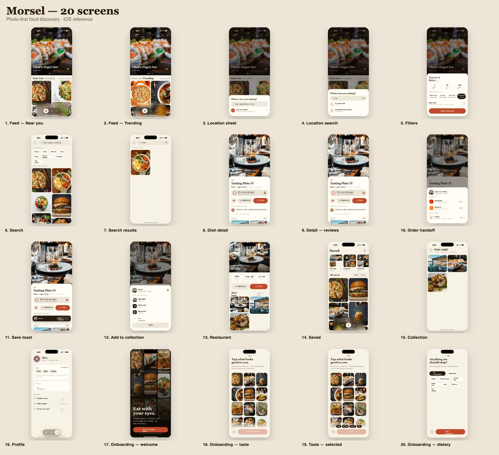
v1 · 20 screensThe concept worked as a demo — and hid five real problems, found in critique below.
CRITIQUE ROUND The v1 audit — what a structured critique pass found (these are design-review findings, not user research):
A safety-model error: "Nut allergy" sat in the same list as "Vegetarian" — a life-or-death constraint modeled as a preference
Credibility theater: "% would order again" shipped with no sample size or methodology
Fake personalization: taste calibration gated browsing but its output wasn't actually used for ranking
Missing states: active tab was color-only; search results unlabeled; empty and edge states absent
Dead controls: several visible affordances (profile rows, new-collection +) did nothing
V2 — THE CRITIQUE RESPONSE
v2 answered the audit point by point. The headline fix is the dietary model — one list became three tiers with different power: taste re-ranks · lifestyle filters · allergies exclude and flag.
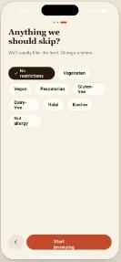
Before · v1One flat list — a nut allergy modeled identically to a lifestyle choice.
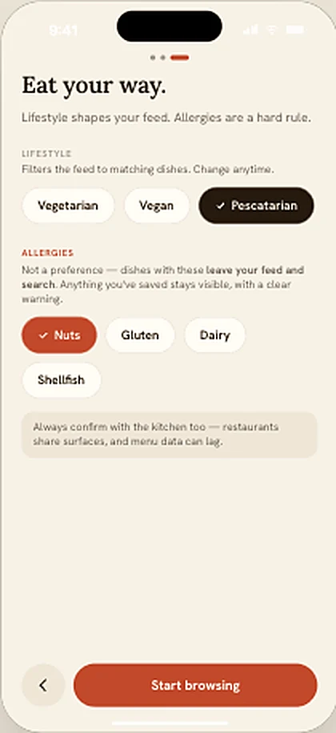
After · v2→v3"Eat your way": lifestyle and allergies split into tiers with different visual weight, different power, and a kitchen-confirmation reminder.
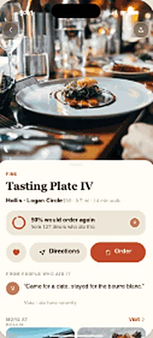
Before · v1A bare percentage — different clothes, same credibility problem as stars.
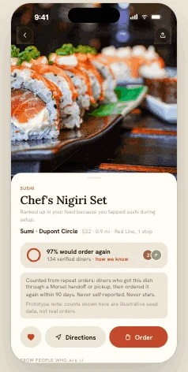
After · v2→v3Percentage + sample + expandable method ("how we know"), a 90-day window, and a prototype-data note. Cold start abstains: "New — no score yet."
Before · v1Search returned unlabeled photos — browsing rules applied to a comparing task.
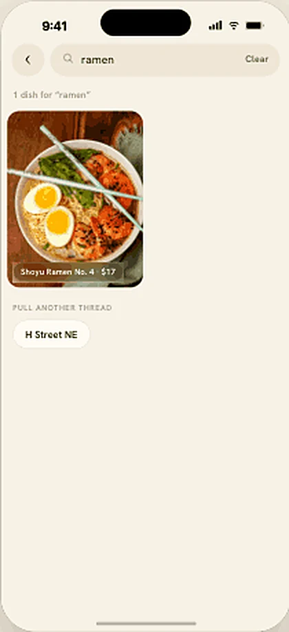
After · v2→v3Browsing is appetite-led, search is comparison-led — so the feed stays photo-only and search results earn labels and related threads.
V3 — MAKING THE LOGIC TRUE
v3 is the pass most concept portfolios skip: making claims real inside the prototype, then designing every state the happy path hides.
Personalization became real. A deterministic affinity boost from onboarding taps re-ranks the feed (nearScore = distance − min(affinity, 2) × 0.3), boosted dishes carry a "your taste" tag, the dish detail explains why ("ranked up because you tapped sushi"), and a recalibrate path exists. It's a transparent toy model standing in for a real ranker — and it never filters; Trending is deliberately unaffected.
The allergy promise was corrected to what ships. v2's copy promised "removed everywhere, always" — but saved items are deliberately retained with warnings, so v3 rewrote the promise to match the behavior exactly. Saves are never silently deleted; direct opens get a warning banner; allergen data is labeled prototype-grade, "always confirm with the kitchen."
Location got honest. Typed location input; only Washington, DC has seeded coverage; any other city gets a truthful "Los Angeles isn't mapped yet" state instead of mislabeled DC dishes — plus permission rationale, "continue without location," and a location-off recovery banner.
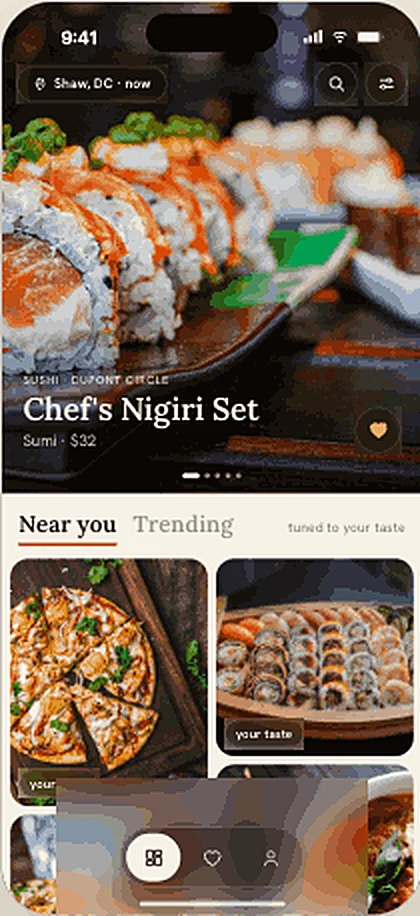
Feed, tuned — boosts visible, never filtering
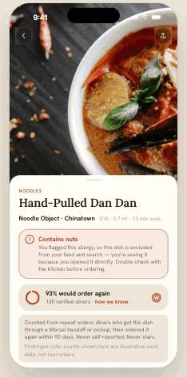
Direct open of a conflicting dish — warned, not blocked
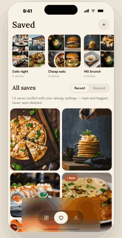
Saves retained with warn chips — never auto-deleted
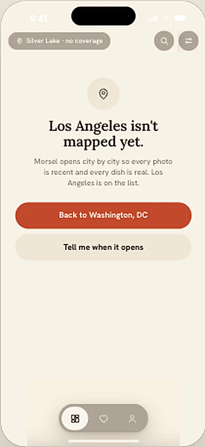
Honest no-coverage state — no fake city
The states most concepts never design. Loading, offline, zero-result with tiered recovery ("clear filters" can never touch allergies), handoff failure with a pickup fallback, closed restaurants, empty saved, cold-start trust, image failure:
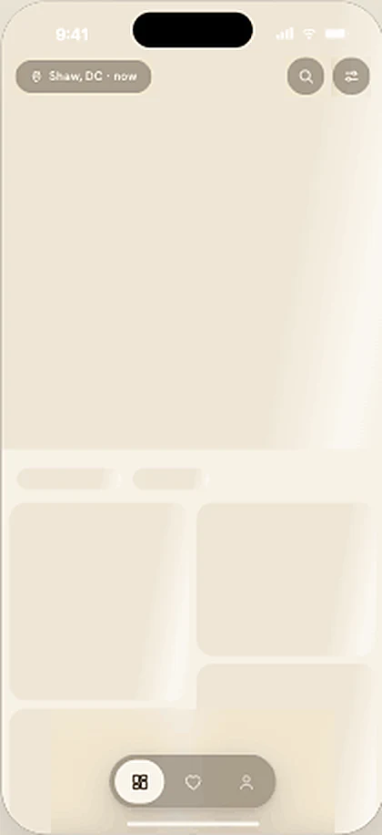
Loading skeleton
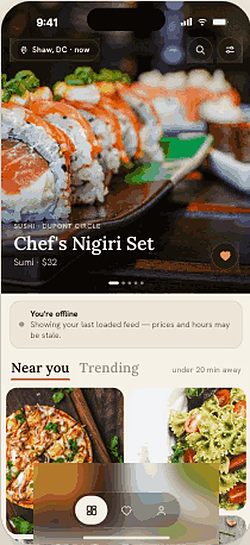
Offline — stale feed, said plainly
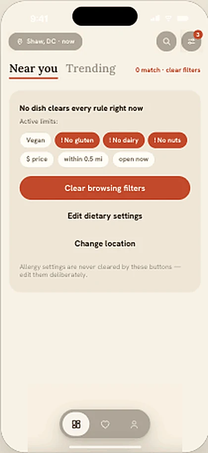
Zero-result recovery — names each limit; clear-filters never touches allergies
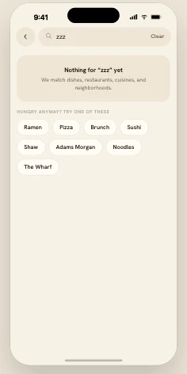
Search empty + recovery threads
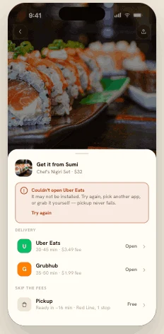
Handoff failure — retry, other carrier, pickup
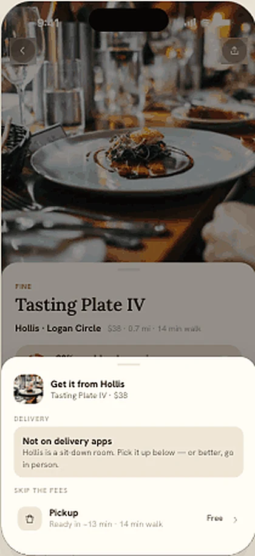
No carrier — pivot to pickup
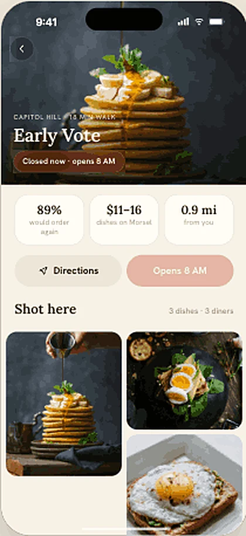
Closed — disabled Order names the reason
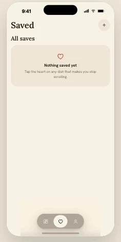
Saved, empty — teaches the gesture
Accessibility pass: all type on a multiplier (100–140% Dynamic Type simulated), focus-visible rings, non-color state indicators everywhere (✓ / ! / dashed / underline), reduced-motion honored (zoom transition and skeleton shimmer off), status/alert roles on banners.
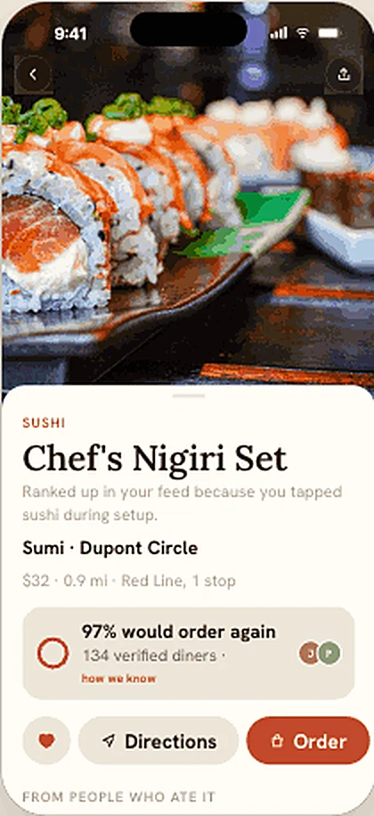
Dynamic Type at 140% — layout holds, nothing truncates
STRUCTURE & ASSUMPTIONS
The whole prototype as a wireflow — green marks implemented changes (by round), amber marks what is still an assumption and targeted by the usability plan. Keeping the assumption map on the same diagram as the structure is the point: the map shows exactly where the design is load-bearing on untested beliefs.
Four unresolved decisions explored as real alternatives with trade-offs — not post-hoc validation of what shipped. Each ends with a provisional recommendation and how to test it:
A · Feed density: keep the photo-only feed; use overlay chips only for mode context. If ≥3/5 test participants open details just to check price, promote the chip variant
B · Onboarding model: ship calibrate-first (skippable); progressive prompting is the strongest challenger — the non-negotiable is that allergy capture precedes unrestricted browsing
C · Trust signal: precise number + visible sample + method when data exists; honest abstention when it doesn't
D · Action hierarchy: context-dependent primary (order / directions / pickup by state) is the destination; v3 ships its first two rules
PROPOSED The validation package is written and unexecuted — 5 moderated sessions, 10 tasks, a severity scale, and a findings→iteration matrix. Priority questions, in order:
Does the photo-only grid give enough info scent, or do users bounce to detail views just to check price? (Exploration A's fallback is ready)
Is "% would order again" understood as repeat-order rate — or misread as a star substitute?
Does the allergy model (exclude from discovery / warn on retained) match users' mental model? Safety-critical if wrong
Do zero-result recovery actions read as three different tiers, or one blur?
Success gate for the next iteration: zero S1 findings, at most one S2.
Unresolved by design work, and stated as the real headline of this case study — the two hardest problems are not screens:
Trust-metric plumbing. Repeat-order attribution across carrier handoffs, dish-identity resolution across menus, gaming prevention, the minimum-sample threshold, cold start. The design abstains honestly below threshold — but production needs the pipes.
Allergen-data liability. Menu data is stale and unverified at scale. The design treats allergen info as best-effort with explicit kitchen-confirmation disclaimers; marketing it as safety-adjacent needs restaurant-verified data and a liability review.
Photo supply. Licensing vs. UGC, freshness, misrepresentation moderation — the entire premise degrades with stale or stocky photos.
Carrier economics & coverage. Deep-link reliability and fee accuracy; city-by-city seeding is expensive, and the honest no-coverage state helps expectations, not acquisition.
STATUS & WHAT'S TRUE
Every "finding" here is a critique observation or a hypothesis — the next artifact this project needs isn't a screen, it's five usability sessions.